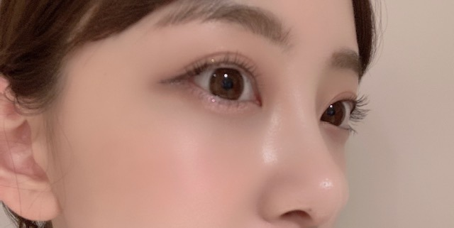

2020/0830Sunぐだぐだん

最近、室内空調の寒さにやられてしまうので
長袖をたまに着てます
暑がりやのにー！
秋冬が近づいてきたワクワク感を抑えきれず
散歩をしながら何回も母に秋の匂いがする！と
訴えてました
秋の匂いは、金木犀と炊き込みご飯と
栗とさつまいもと紅葉が混ざった匂いなんです
生まれ月がいちばんすき
みてー！
この日のまつげメイクがお気に入りで
写真撮ってみました！

目尻にかけてまつげを濃いめにしました


質問返し
この時期暑くて食欲無い時にサラッと食べれる
堀ちゃんおすすめメニューあれば教えて欲しいです！
...梅干しを使った料理はおすすめ！
あとは最近ゴーヤチャンプルーを作りました。
簡単で美味しかったです。
もずくも夏バテに良さそう！
男性の好きな髪型はなんですか？
...似合っていればなんでもいいと思いますが
最近はセンター分けいいなと思います
寝過ぎて頭が痛くなること、ありますか？
...おやすみの日はずーっと寝てるくらい
寝ることがすきなのでよくあります、、
ジブリ飯で特に食べたいのは何ですか？
...わー たくさんあるけど
アリエッティのたまご？パン
コクリコ坂からのお弁当
ハウルのベーコンエッグ
まだメンバーとあつ森の通信したりしますか？
...この間みなみと松村さんと話したんだけど
わたしが1番あつ森できてないです。笑
久しぶりにしよーかなー
未央奈ちゃんが何か物事を新しく始める時に大切にしてることは？
...楽しむこと
最近 何のゲームやってる？
今ハマってるマンガやアニメある？
...ゲームはswitchだとスマブラ
ps4だとホラーゲームとバイオ7を地道に進めてます
漫画は最近見れてないからみなさんおすすめの
キュンキュンほくほく少女漫画教えてください！！
アニメは、冴えカノ観てます
質問まだまだ受け付けますねー
2020/08/30 17:06
コメント(312)
未央奈さんブログ更新してくれてありがとうございます。今日はモバメを頂きありがとうございます。未央奈さんの実家の岐阜県は暑くて有名です。多治見で38℃って８月中旬位に気象予報士の木原さんが言ってた。僕も秋の季節は ♥️❤️です。４月が誕生月なんだけどなぜか10月の誕生月の人を好きになる事が多いです。未央奈さん のエアコンは苦手なら弱冷房車の車両に乗ると 。青い洋服未央奈さんの2nd写真集を思い出す。ウェディングドレス良く似合ってる。ずっと応援しています。未央奈さんもコロナと熱中症に気を付けて頑張って下さい。
冴えカノめちゃめちゃおもしろいですよね。映画はめっちゃ感動するんで是非暇な時に見てみてください。最近スキンケアに力を入れて色々買ってみたんですが、肌に色々ぬりすぎて逆に肌荒れしてしまいました。未央奈さんはどのようなスキンケアをしていますか？是非教えてほしいです。これからもずっと応援しています。
更新待ってました〜
未央奈ちゃんかわいいい
最近私もあつもりやってないなぁ…
次の更新も待ってるね〜
未央奈ちゃんかわいいい
最近私もあつもりやってないなぁ…
次の更新も待ってるね〜
こんばんは。ブログ更新ありがとうございます。
目じりのまつ毛、濃くするとお姫様みたいですね。
私も暑がりで、今日もエアコン無しではいられませんでした。今年も彼岸まで酷暑が続くのかな？と思うとちょっと憂鬱です。
秋の匂い、私にとってもまずは金木犀ですね。あとは石焼き芋と、甘栗の匂い。食欲の秋ですね。
ではまた。
目じりのまつ毛、濃くするとお姫様みたいですね。
私も暑がりで、今日もエアコン無しではいられませんでした。今年も彼岸まで酷暑が続くのかな？と思うとちょっと憂鬱です。
秋の匂い、私にとってもまずは金木犀ですね。あとは石焼き芋と、甘栗の匂い。食欲の秋ですね。
ではまた。
ブログ更新ありがとう
自分は未央奈さんと同じ10月15日が誕生日です
同じ誕生日の未央奈さんを応援しています。大好きです
質問
・最近ホラー映画見ましたか❓
自分は最近、犬鳴村を見ました。
お仕事とかで色々忙しいと思うけど、バイオハザード8が発売されるまでにバイオハザード7終わらせれるように頑張ってね。
これからも応援してるよ。
自分は未央奈さんと同じ10月15日が誕生日です
同じ誕生日の未央奈さんを応援しています。大好きです
質問
・最近ホラー映画見ましたか❓
自分は最近、犬鳴村を見ました。
お仕事とかで色々忙しいと思うけど、バイオハザード8が発売されるまでにバイオハザード7終わらせれるように頑張ってね。
これからも応援してるよ。
ブログ更新ありがとう！更新されるだけで幸せを感じます。
質問です。
755などでおすすめのスニーカーを聞いていましたが
最近何かスニーカーは買われましたか？
お答えしていただけると嬉しいです。
次回のブログも楽しみにしてます。
質問です。
755などでおすすめのスニーカーを聞いていましたが
最近何かスニーカーは買われましたか？
お答えしていただけると嬉しいです。
次回のブログも楽しみにしてます。
乃木中にて、CM見ました。良き。
さて、質問です。
あれ、堀ちゃんじゃない？と、街で見かけたら、声をかけても良いですか？（お仕事中は絶対に難しいから、プライベートでお見かけした時と仮定します。）
さて、質問です。
あれ、堀ちゃんじゃない？と、街で見かけたら、声をかけても良いですか？（お仕事中は絶対に難しいから、プライベートでお見かけした時と仮定します。）
ブログ更新ありがとう！
質問:堀ちゃんの最近のスキンケアを教えてください！
質問:堀ちゃんの最近のスキンケアを教えてください！
堀ちゃんこんばんは！
僕も冷房冷え対策でたまに長袖のときありますー！おそろい！笑
あと、足が特に冷えやすいなぁと思うので、足元にだけ羽毛布団を置いて突っ込んで寝てます起きたとき冷えてなくていい感じです(o^^o)
もう秋の話も出始める頃ですね、堀ちゃんのブログは季節感も感じられるから好きだ( ´ ▽ ` )♩
夏が1番好きなので終わりは寂しいですが秋も好きなので、頭を秋の好きなとこに切り替えていきます、まだまだ暑いですが、暦の上ではもう9月ですもんね(^^)
秋の匂いは金木犀、めっちゃ分かります、金木犀の匂いを感じると、夏の終わりと秋の始まりを実感して、心がジワッとなんとも言えない感覚になります( ´ ▽ ` )
今の家の周りには金木犀ないなぁ、鉢で育てられるみたいなので買おうかなぁ(o^^o)
僕も生まれ月は好きですね、みんなそういう感覚なのかなぁ( ´ ▽ ` )
堀ちゃんから一足早く生まれ月に突入します、楽しい1ヶ月になるといいな(o^^o)
ちなみに日付変わって8月最終日の本日、8月31日は「I Love Youの日」らしいです( ´ ▽ ` )
英語圏のスラングで「831=I Love You」と表すみたいです、由来は長そうだったので省略(^^)笑
プライベートでこんなことを話題にすることはないので、なんだか少し小っ恥ずかしいですが笑
I Love Youの日だからと、結婚してる人や恋人がいる人は、愛を伝えたりするんでしょうか(^^)
個人的には普段から堀ちゃんには大好きだと伝えているつもりなので、今さら改めて言う必要はないですかね？( ´ ▽ ` )
…でも、たまたまそういう日と知りましたし、折角なので言わせてください(o^^o)
堀ちゃん、I Love You！
ドストライクの見た目の可愛さはもちろん
堀ちゃんからだけ感じるダンスの独特な雰囲気の魅力や
女優としての目標に対して熱い想いを持っているところ
バラエティでは振り切って周りを盛り上げにいく勇気と気遣い
アイドルとしての魅力も追求してどんどん輝いていく姿
ファンのことを想ってくれているところ、そして言動や行動で「堀ちゃんは僕たちのことを想ってくれてるなぁ」としっかり感じさせてくれるところ
毎日堀ちゃんの魅力を感じない日はありません
そんな堀ちゃんのこと、僕は愛しています(o^^o)
改めて綴ってみると照れますね( ´ ▽ ` )笑
普段からこんなこと、これよりもっとたくさんの堀ちゃんの好きなところを感じています、めっちゃ大好きです(o^^o)
これからもよろしくお願いします(^^)♩
では！ちょっと照れるのでこの辺で退散します！
夜のテンションで書いたので明日起きたら少し恥ずかしく思うのかな笑
でも、大好きなのは間違いない常日頃の僕の本音です(o^^o)
またコメントさせてくださいー！( ´ ▽ ` )
僕も冷房冷え対策でたまに長袖のときありますー！おそろい！笑
あと、足が特に冷えやすいなぁと思うので、足元にだけ羽毛布団を置いて突っ込んで寝てます起きたとき冷えてなくていい感じです(o^^o)
もう秋の話も出始める頃ですね、堀ちゃんのブログは季節感も感じられるから好きだ( ´ ▽ ` )♩
夏が1番好きなので終わりは寂しいですが秋も好きなので、頭を秋の好きなとこに切り替えていきます、まだまだ暑いですが、暦の上ではもう9月ですもんね(^^)
秋の匂いは金木犀、めっちゃ分かります、金木犀の匂いを感じると、夏の終わりと秋の始まりを実感して、心がジワッとなんとも言えない感覚になります( ´ ▽ ` )
今の家の周りには金木犀ないなぁ、鉢で育てられるみたいなので買おうかなぁ(o^^o)
僕も生まれ月は好きですね、みんなそういう感覚なのかなぁ( ´ ▽ ` )
堀ちゃんから一足早く生まれ月に突入します、楽しい1ヶ月になるといいな(o^^o)
ちなみに日付変わって8月最終日の本日、8月31日は「I Love Youの日」らしいです( ´ ▽ ` )
英語圏のスラングで「831=I Love You」と表すみたいです、由来は長そうだったので省略(^^)笑
プライベートでこんなことを話題にすることはないので、なんだか少し小っ恥ずかしいですが笑
I Love Youの日だからと、結婚してる人や恋人がいる人は、愛を伝えたりするんでしょうか(^^)
個人的には普段から堀ちゃんには大好きだと伝えているつもりなので、今さら改めて言う必要はないですかね？( ´ ▽ ` )
…でも、たまたまそういう日と知りましたし、折角なので言わせてください(o^^o)
堀ちゃん、I Love You！
ドストライクの見た目の可愛さはもちろん
堀ちゃんからだけ感じるダンスの独特な雰囲気の魅力や
女優としての目標に対して熱い想いを持っているところ
バラエティでは振り切って周りを盛り上げにいく勇気と気遣い
アイドルとしての魅力も追求してどんどん輝いていく姿
ファンのことを想ってくれているところ、そして言動や行動で「堀ちゃんは僕たちのことを想ってくれてるなぁ」としっかり感じさせてくれるところ
毎日堀ちゃんの魅力を感じない日はありません
そんな堀ちゃんのこと、僕は愛しています(o^^o)
改めて綴ってみると照れますね( ´ ▽ ` )笑
普段からこんなこと、これよりもっとたくさんの堀ちゃんの好きなところを感じています、めっちゃ大好きです(o^^o)
これからもよろしくお願いします(^^)♩
では！ちょっと照れるのでこの辺で退散します！
夜のテンションで書いたので明日起きたら少し恥ずかしく思うのかな笑
でも、大好きなのは間違いない常日頃の僕の本音です(o^^o)
またコメントさせてくださいー！( ´ ▽ ` )
秋の匂い、早いな～(^-^)
未央奈さん、今日も可愛くてキレイ。
キレイな人がめがねするといいですよね。ドキッとしてますます好きになります。
まだまだ暑い日が続きそうなので、体調には気をつけてねー。
キレイな人がめがねするといいですよね。ドキッとしてますます好きになります。
まだまだ暑い日が続きそうなので、体調には気をつけてねー。
深夜です。午前2時です。お邪魔します。
今ごろ未央奈は熟睡中だと思います。
今日乃木中ＣＭ中に未央奈を見つけました。
って違くてＰＶ発売のＣＭに出ていたんですねぇ～
これまでの未央奈の姿が流れていました。
とても良いＣＭです。 未央奈かわいかった。
このＣＭってＰＶに収録されないですかねぇ？
飛鳥バージョンもあったので、その他のメンバー
のバージョンも存在するんでしょうな。（笑）
絢音ちゃんバージョンないですかねぇ？（笑）
ＣＭの感想でした。
おやすみおな～
今ごろ未央奈は熟睡中だと思います。
今日乃木中ＣＭ中に未央奈を見つけました。
って違くてＰＶ発売のＣＭに出ていたんですねぇ～
これまでの未央奈の姿が流れていました。
とても良いＣＭです。 未央奈かわいかった。
このＣＭってＰＶに収録されないですかねぇ？
飛鳥バージョンもあったので、その他のメンバー
のバージョンも存在するんでしょうな。（笑）
絢音ちゃんバージョンないですかねぇ？（笑）
ＣＭの感想でした。
おやすみおな～
お疲れ様です。(るなぴ風)
もう9月なのにまだ暑いですねー。体調にお気をつけて✋
質問です!今更ですが活動休止したRIP SLYMEに対して思う事はありますか？それと関係無いですが、堀さんが歌う黄昏サラウンド聴いてみたいです(´ω｀)
もう9月なのにまだ暑いですねー。体調にお気をつけて✋
質問です!今更ですが活動休止したRIP SLYMEに対して思う事はありますか？それと関係無いですが、堀さんが歌う黄昏サラウンド聴いてみたいです(´ω｀)
堀さん、こんばんは。
早くも長袖とはモデルだけあって季節を先取りしてるんですね。秋の匂いは分かるような分からないようななので匂い意識して散歩してみます。どうしても分からなければマスクの内側にポケットつけてそこにぶち込みます。
眼の写真は、まつ毛がぱっちりで綺麗ですね。堀さんが日々可愛くなっているのはメイク研究の賜物なんですね。
ゴーヤチャンプルーは美味しそうですね。食べたくなりました。少女漫画では無いですがこの前読んだ「血の轍」が怖すぎて二度と読みたくないくらい面白かったです。
あとＭＶ集のＣＭ見ましたよ。卒業とか結婚とか出産とか移住みたいな大きな変化が有ったら思い出として見たくなるってことに思えました。それに”いつか”は堀さんの名前の”未”そのもので、無いことは希望だっていう前向きなメッセージな気もしました。
早くも長袖とはモデルだけあって季節を先取りしてるんですね。秋の匂いは分かるような分からないようななので匂い意識して散歩してみます。どうしても分からなければマスクの内側にポケットつけてそこにぶち込みます。
眼の写真は、まつ毛がぱっちりで綺麗ですね。堀さんが日々可愛くなっているのはメイク研究の賜物なんですね。
ゴーヤチャンプルーは美味しそうですね。食べたくなりました。少女漫画では無いですがこの前読んだ「血の轍」が怖すぎて二度と読みたくないくらい面白かったです。
あとＭＶ集のＣＭ見ましたよ。卒業とか結婚とか出産とか移住みたいな大きな変化が有ったら思い出として見たくなるってことに思えました。それに”いつか”は堀さんの名前の”未”そのもので、無いことは希望だっていう前向きなメッセージな気もしました。
「ALL MV COLLECTION 2 ～あの時の彼女たち～」の未央奈ちゃんヴァージョン、観ましたよ。とってもいいＣＭですね。
「いつかわからない いつかのために 持っておきたいんです」
思い出って、そういうものでしょうね。
夢中でやっていたことが、ふと振り返ると自分の記憶に残っている。ある日突然思い出すことってありますよね。
楽しい思い出、嬉しかった思い出、幸せを感じる思い出
悲しい思い出、辛かった思い出、悔しかった思い出・・・あの日あの時のことは無かったことにしたい思い出も、個人的に二つあります。
でも、そんなこと全部ひっくるめて、思い出になっているんですよね。
私はいたずらに過去を振り返ったり、思い出にひたるタイプでは無いのですが、未央奈ちゃんが言うように、季節ごとの香りが漂って来た時、ふと蘇る場面があることは間違いないですね。
結局、過去があるから今があるのですもんね。
決して感傷的ではないけれど、何かを大切にしていることが伝わる未央奈ちゃんのＣＭの表現に、「ゆっくりと咲く花」が絡まって、素敵な30秒の作品になってますね。
755に載せてくれていた６年前のブログからのarへのあの時と今の想いが、このＣＭにリンクしました。
一日一日、自分に出来ることを頑張ろう
そう思わせてくれたＣＭでした。
発売が楽しみです。
「いつかわからない いつかのために 持っておきたいんです」
思い出って、そういうものでしょうね。
夢中でやっていたことが、ふと振り返ると自分の記憶に残っている。ある日突然思い出すことってありますよね。
楽しい思い出、嬉しかった思い出、幸せを感じる思い出
悲しい思い出、辛かった思い出、悔しかった思い出・・・あの日あの時のことは無かったことにしたい思い出も、個人的に二つあります。
でも、そんなこと全部ひっくるめて、思い出になっているんですよね。
私はいたずらに過去を振り返ったり、思い出にひたるタイプでは無いのですが、未央奈ちゃんが言うように、季節ごとの香りが漂って来た時、ふと蘇る場面があることは間違いないですね。
結局、過去があるから今があるのですもんね。
決して感傷的ではないけれど、何かを大切にしていることが伝わる未央奈ちゃんのＣＭの表現に、「ゆっくりと咲く花」が絡まって、素敵な30秒の作品になってますね。
755に載せてくれていた６年前のブログからのarへのあの時と今の想いが、このＣＭにリンクしました。
一日一日、自分に出来ることを頑張ろう
そう思わせてくれたＣＭでした。
発売が楽しみです。
未央奈～
ローマの休日のオードリー・ヘプバーンの前髪にしないの？
許可がいると思うけどさ、俺みたいにその前髪好きな人けっこういると思うのにメンバーに一人もいないし、してたら際立つと思うよ。
もしその前髪にして似合ってなかったら、俺、責任取って未央奈と結婚するよ。それか未央奈単推しになる。
ま、確実に似合うし、その前髪の未央奈がかわいすぎて未央奈のことが頭から離れなくなりそう。
ローマの休日のオードリー・ヘプバーンの前髪とポニーテールの組み合わせが最高。
ローマの休日のオードリー・ヘプバーンの前髪にしないの？
許可がいると思うけどさ、俺みたいにその前髪好きな人けっこういると思うのにメンバーに一人もいないし、してたら際立つと思うよ。
もしその前髪にして似合ってなかったら、俺、責任取って未央奈と結婚するよ。それか未央奈単推しになる。
ま、確実に似合うし、その前髪の未央奈がかわいすぎて未央奈のことが頭から離れなくなりそう。
ローマの休日のオードリー・ヘプバーンの前髪とポニーテールの組み合わせが最高。
好き
ブログ更新ありがとう❗新型コロナの中、お暑い中、お疲れさま！お仕事、大変だけど頑張ってね！健康だけはきちんと整えてくれればと思います。
こんにちは。
5回目のコメントです。
私も秋が一番好きです。
新作のお洋服やコスメなどを見ると秋を感じてワクワクしてしまいます♡
先日、未央奈ちゃんのモバイルメールの登録いたしました。
楽しみがまた一つ増えました(*･ω･*)
本日お送りくださったお写真はゴーヤチャンプルをお作りなさっているところだったのですね。
とても美味しそうです♡
最近私はもずくとオクラと長芋を使ったサラダにハマっております。
夏バテになってしまったときでも食べやすいです。
よろしければお作りになってみてください。
未央奈ちゃんに二つ質問がございます。
・秋に観たくなる映画はなんですか？
・秋に聴きたくなる楽曲はなんですか？
お忙しいかと存じますが、どうぞご自愛くださいませ。
5回目のコメントです。
私も秋が一番好きです。
新作のお洋服やコスメなどを見ると秋を感じてワクワクしてしまいます♡
先日、未央奈ちゃんのモバイルメールの登録いたしました。
楽しみがまた一つ増えました(*･ω･*)
本日お送りくださったお写真はゴーヤチャンプルをお作りなさっているところだったのですね。
とても美味しそうです♡
最近私はもずくとオクラと長芋を使ったサラダにハマっております。
夏バテになってしまったときでも食べやすいです。
よろしければお作りになってみてください。
未央奈ちゃんに二つ質問がございます。
・秋に観たくなる映画はなんですか？
・秋に聴きたくなる楽曲はなんですか？
お忙しいかと存じますが、どうぞご自愛くださいませ。
質問1:一番苦手な事は何ですか?
質問2:携帯の充電は何パーセントになったらしますか?
質問3:かき氷のシロップは何味が好きですか?
質問4:一番好きなことは何ですか?
質問5:今、一番行きたいところはどこですか?
質問6:一番好きな教科は何ですか?
質問7:一番苦手な教科は何ですか?
質問8:夏休みの宿題は先に終わらせる方ですか?
質問2:携帯の充電は何パーセントになったらしますか?
質問3:かき氷のシロップは何味が好きですか?
質問4:一番好きなことは何ですか?
質問5:今、一番行きたいところはどこですか?
質問6:一番好きな教科は何ですか?
質問7:一番苦手な教科は何ですか?
質問8:夏休みの宿題は先に終わらせる方ですか?
未央奈ブログ更新ありがとう！(^^)
この頃も部活にバイトが忙しくて休みがないです(T . T)
家でゴロゴロしたいなぁ〜！
梅干し料理とゴーヤチャンプル参考にしますね(^^)
僕は秋冬が好きです！
なぜだか洋服も寒い時期の方がたくさん買ってしまいます！
早く来ないかなぁ〜！
まだまだ暑さが残って暑い日々が続くから体調には
気をつけてね！
次の更新も楽しみに待ってます！
この頃も部活にバイトが忙しくて休みがないです(T . T)
家でゴロゴロしたいなぁ〜！
梅干し料理とゴーヤチャンプル参考にしますね(^^)
僕は秋冬が好きです！
なぜだか洋服も寒い時期の方がたくさん買ってしまいます！
早く来ないかなぁ〜！
まだまだ暑さが残って暑い日々が続くから体調には
気をつけてね！
次の更新も楽しみに待ってます！
可愛くて綺麗で天使すぎる！
未央奈最高や〜

未央奈最高や〜
質問
部屋のエアコンの温度は何度に設定する？
部屋のエアコンの温度は何度に設定する？
ブログ更新ありがと‼︎
写真ありがと‼︎♡
めちゃめちゃかわいい♡
昨日ね、アリエッティ見たんだ‼︎
未央奈ちゃんもみたかな？
今ね、テレビ逃走中見てるんだー
昨日未央奈ちゃんが出た時の逃走中見たよ‼︎
結構最後の方で捕まっちゃったの惜しかったね…
捕まった時の顔がめっちゃかわいかった！！♡
また出て欲しいなぁ…♡
写真ありがと‼︎♡
めちゃめちゃかわいい♡
昨日ね、アリエッティ見たんだ‼︎
未央奈ちゃんもみたかな？
今ね、テレビ逃走中見てるんだー
昨日未央奈ちゃんが出た時の逃走中見たよ‼︎
結構最後の方で捕まっちゃったの惜しかったね…
捕まった時の顔がめっちゃかわいかった！！♡
また出て欲しいなぁ…♡
未央奈ちゃんブログ更新ありがとう!!!
まつ毛めっちゃきれい
赤ちゃんみたいな愛おしさがあって本当に可愛いです！
質問返し参考になります！
未央奈ちゃんに質問！
朝ごはんの定番メニューは、
なんですか？？
まつ毛めっちゃきれい
赤ちゃんみたいな愛おしさがあって本当に可愛いです！
質問返し参考になります！
未央奈ちゃんに質問！
朝ごはんの定番メニューは、
なんですか？？
ブログありがとう。
俺は進撃の巨人をネットフリックスで見てるよ。
質問
小説は何か読む？
よろしくお願いします。
俺は進撃の巨人をネットフリックスで見てるよ。
質問
小説は何か読む？
よろしくお願いします。
ブログ更新ありがと‼︎
写真ありがと‼︎♡
めちゃめちゃかわいい♡
昨日ね、アリエッティ見たんだ‼︎
未央奈ちゃんもみたかな？
今ね、テレビ逃走中見てるんだー
昨日未央奈ちゃんが出た時の逃走中見たよ‼︎
結構最後の方で捕まっちゃったの惜しかったね…
捕まった時の顔がめっちゃかわいかった！！♡
また出て欲しいなぁ…♡
写真ありがと‼︎♡
めちゃめちゃかわいい♡
昨日ね、アリエッティ見たんだ‼︎
未央奈ちゃんもみたかな？
今ね、テレビ逃走中見てるんだー
昨日未央奈ちゃんが出た時の逃走中見たよ‼︎
結構最後の方で捕まっちゃったの惜しかったね…
捕まった時の顔がめっちゃかわいかった！！♡
また出て欲しいなぁ…♡
ブログありがとう！！
今日もかわいい♡
未央奈ちゃんもスマブラするんだ！☺︎
今日もかわいい♡
未央奈ちゃんもスマブラするんだ！☺︎
未央奈ちゃん更新ありがとう！
今回もたくさん写真ありがとね！
これでまた一週間頑張れそうです！
まだまだ暑さが続くので、
お互い体調には気をつけようね！
ではでは！
今回もたくさん写真ありがとね！
これでまた一週間頑張れそうです！
まだまだ暑さが続くので、
お互い体調には気をつけようね！
ではでは！
未央奈ちゃん
カワイイ
カワイイ
秋はやっぱり紅葉とサツマイモだよね！！
堀ちゃん、焼き芋好きそう！
堀ちゃん、焼き芋好きそう！
未央奈ちゃんに今、一番お勧めしたい曲（「あまのじゃく」なもんで）は、
「Windy Shadow」の『Star』‼
「Windy Shadow」の『Star』‼
ブログ更新ありがとうございます！
変化する未央奈さんが大好きです。
変化する未央奈さんが大好きです。
未央奈ちゃんありがとうございます‼楽しみにしてます‼お疲れ様です。頑張ります‼頑張って下さい！ありがとうございます‼楽しみにしてます‼
ブログ更新ありがとうございます
堀さんも秋の10月誕生日なんですね
金木犀いい香りですよね〜
実家に金木犀があったので、それが香りづいてくると誕生日が近いのでワクワクしてた記憶があります笑
少年漫画だけど
＂徒然チルドレン＂
おすすめです
オムニバス形式なので、堀さんがそわそわきゅんきゅんするカップルやまだなれてない二人が出てくること間違いなしです
最近KPOPにハマってるんですが、堀さんは聞いたりしますか？
顔も歌もかっこよくてダンスもキレキレで男から見てもかっこいいです
堀さんも秋の10月誕生日なんですね
金木犀いい香りですよね〜
実家に金木犀があったので、それが香りづいてくると誕生日が近いのでワクワクしてた記憶があります笑
少年漫画だけど
＂徒然チルドレン＂
おすすめです
オムニバス形式なので、堀さんがそわそわきゅんきゅんするカップルやまだなれてない二人が出てくること間違いなしです
最近KPOPにハマってるんですが、堀さんは聞いたりしますか？
顔も歌もかっこよくてダンスもキレキレで男から見てもかっこいいです
みおなちゃん、大好きです
堀ちゃん、ブログ更新ありがとう〜
堀ちゃんのお誕生日近づいてるねー
今年生誕グッズ、楽しみだよー
堀ちゃんのお誕生日近づいてるねー
今年生誕グッズ、楽しみだよー
おはよう
私あまり少女漫画を読んでないのでおすすめはありませんが、映画大好きな私、少女漫画の実写映画よく観てます。ちょっとだけおすすめしててもよろしいでしょうか
ホットギミック含めて
1.LDK
2.のだめカンタービレ
3.君に届け
4.ホットロード
5.虹色デイズ
6.殺さない彼と死なない彼女
7.僕の初恋をキミに捧ぐ
8.君の膵臓を食べたい
9.ヒロイン失格
10.オタクに恋は難しい
11.四月は君の嘘
12.ストロボ・エッジ
13.カノジョは嘘を愛しすぎてる
14.アオハライド
15.恋は雨上がりのように
16.オオカミ少女と黒王子
17.僕等がいた
18.ハチミツとクローバー
19.ぼくは明日、昨日のきみとデートする
20.オレンジ
暫く思い出すのはこれ。順位なし。
多分みおなさんは既に観たことが多かった。
私あまり少女漫画を読んでないのでおすすめはありませんが、映画大好きな私、少女漫画の実写映画よく観てます。ちょっとだけおすすめしててもよろしいでしょうか
ホットギミック含めて
1.LDK
2.のだめカンタービレ
3.君に届け
4.ホットロード
5.虹色デイズ
6.殺さない彼と死なない彼女
7.僕の初恋をキミに捧ぐ
8.君の膵臓を食べたい
9.ヒロイン失格
10.オタクに恋は難しい
11.四月は君の嘘
12.ストロボ・エッジ
13.カノジョは嘘を愛しすぎてる
14.アオハライド
15.恋は雨上がりのように
16.オオカミ少女と黒王子
17.僕等がいた
18.ハチミツとクローバー
19.ぼくは明日、昨日のきみとデートする
20.オレンジ
暫く思い出すのはこれ。順位なし。
多分みおなさんは既に観たことが多かった。
未央奈ブログ更新ありがとう！
確かにキンモクセイは秋の匂いな感じするね。匂いで季節を感じるって素敵よね。
メイクのことよくわからないけどまつげ可愛い。
この水色の服似合うね。
質問返しって未央奈のこと知れるから嬉しいな。
昨日のモバメのゴーヤチャンプルー美味しそうだったよ。
質問！楽しみにしてる秋の味覚はありますか？僕は美味しい秋刀魚が食べたい。
では！
確かにキンモクセイは秋の匂いな感じするね。匂いで季節を感じるって素敵よね。
メイクのことよくわからないけどまつげ可愛い。
この水色の服似合うね。
質問返しって未央奈のこと知れるから嬉しいな。
昨日のモバメのゴーヤチャンプルー美味しそうだったよ。
質問！楽しみにしてる秋の味覚はありますか？僕は美味しい秋刀魚が食べたい。
では！
こんにちは～
、、暑い日が、、続いているね～
、、二週間だけの恋、、(笑)みたいな、、
、、二週間だけ、、吸血鬼になる、、(笑)ウイルスの話、、の映画とか、、あったら、、
、、ヒロインだね～
、、じゃあ、、またね～
、、暑い日が、、続いているね～
、、二週間だけの恋、、(笑)みたいな、、
、、二週間だけ、、吸血鬼になる、、(笑)ウイルスの話、、の映画とか、、あったら、、
、、ヒロインだね～
、、じゃあ、、またね～
ブログ更新ありがとうございます❗
学校の昼休み時間に見てるので癒せれます
未央奈さんのおかけで大会勝つことができましたありがとうございます
質問します❗
春、夏、秋、冬どれが好きですか？
学校の昼休み時間に見てるので癒せれます
未央奈さんのおかけで大会勝つことができましたありがとうございます
質問します❗
春、夏、秋、冬どれが好きですか？
ブログ更新ありがとう！
みおなかわいい
みおなかわいい
冴えカノ見てるんですか？？映画も激アツなので是非！
ブログ更新ありがとうございます
ブログ更新ありがとうございます
みおなー！
仕事で7分袖のガウンカーデを迷ってるお客さんに
室内が寒い時もあるので
羽織があると便利ですよっておすすめしたら
買っていってもらえたよ！
前にブログで言ってた
みおなの洋服の感想を生かせたー
うれしい♪ ありがとう！
ゆるふわの髪型、
水色のトップスと合っててかわいい！
まつげメイクもきれい～
目元をはっきりさせつつナチュラルで素敵！
仕事で7分袖のガウンカーデを迷ってるお客さんに
室内が寒い時もあるので
羽織があると便利ですよっておすすめしたら
買っていってもらえたよ！
前にブログで言ってた
みおなの洋服の感想を生かせたー
うれしい♪ ありがとう！
ゆるふわの髪型、
水色のトップスと合っててかわいい！
まつげメイクもきれい～
目元をはっきりさせつつナチュラルで素敵！
未央奈ブログ更新ありがとう！
未央奈におすすめする少女漫画は
「青春ヘビーローテーション」
「目覚めたらキスしてよ」
「仁義なき婿取り」
「アオハライド」
です！！
キュンキュンしますよ！！
あと、質問は
●おすすめの韓国ドラマおしえてください！！
●NARUTOは好きですか？
未央奈におすすめする少女漫画は
「青春ヘビーローテーション」
「目覚めたらキスしてよ」
「仁義なき婿取り」
「アオハライド」
です！！
キュンキュンしますよ！！
あと、質問は
●おすすめの韓国ドラマおしえてください！！
●NARUTOは好きですか？
未央奈ちゃん更新ありがとう
私も秋が好きです♪服も秋冬物が好き！
まだまだ暑いけど早くきてほしいね◎
まつ毛上がってますね✨
メイクも綺麗です～(*^^*)
ボブの未央奈ちゃんも可愛い
ゆるふわな感じも良きですね♪
またの更新楽しみにしてます☀
私も秋が好きです♪服も秋冬物が好き！
まだまだ暑いけど早くきてほしいね◎
まつ毛上がってますね✨
メイクも綺麗です～(*^^*)
ボブの未央奈ちゃんも可愛い
ゆるふわな感じも良きですね♪
またの更新楽しみにしてます☀
ブログ更新ありがとうございます！
エアコンが寒すぎて長袖を着てしまうこと、とても共感できます。
-質問-
秋が近づいてきていますが、今年の秋にしたいことは何かありますか？
エアコンが寒すぎて長袖を着てしまうこと、とても共感できます。
-質問-
秋が近づいてきていますが、今年の秋にしたいことは何かありますか？
未央奈ちゃんこんばんは！ありがとうございます！かなり楽しみにしてます！頑張ります‼お疲れ様です。
堀未央奈さん、こんにちは
初めましてですね！
未央奈さん綺麗ですね！
私がハマっている漫画は、｢キングダム｣と｢鬼滅の刃｣です。ホントおもしろいですよ！是非、一度見てみてね！
初めましてですね！
未央奈さん綺麗ですね！
私がハマっている漫画は、｢キングダム｣と｢鬼滅の刃｣です。ホントおもしろいですよ！是非、一度見てみてね！


未央奈さんが欲しい指輪のサイズは何号ですか？
「きみの名は」？………「卵黄」……*